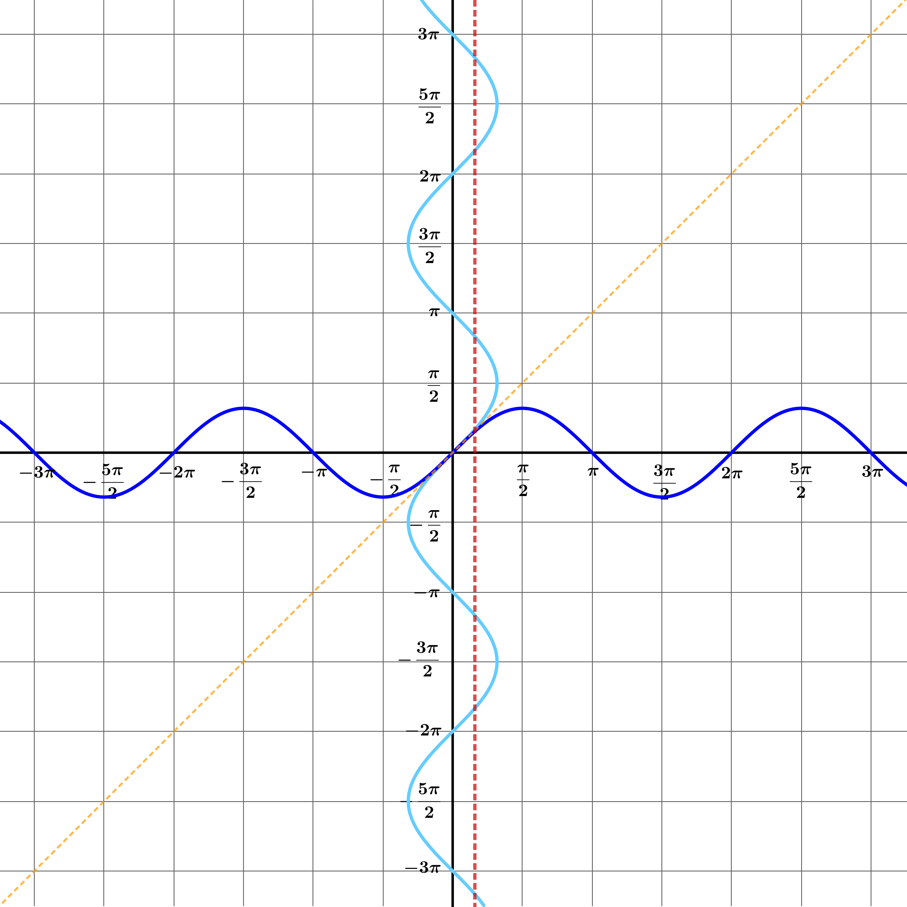
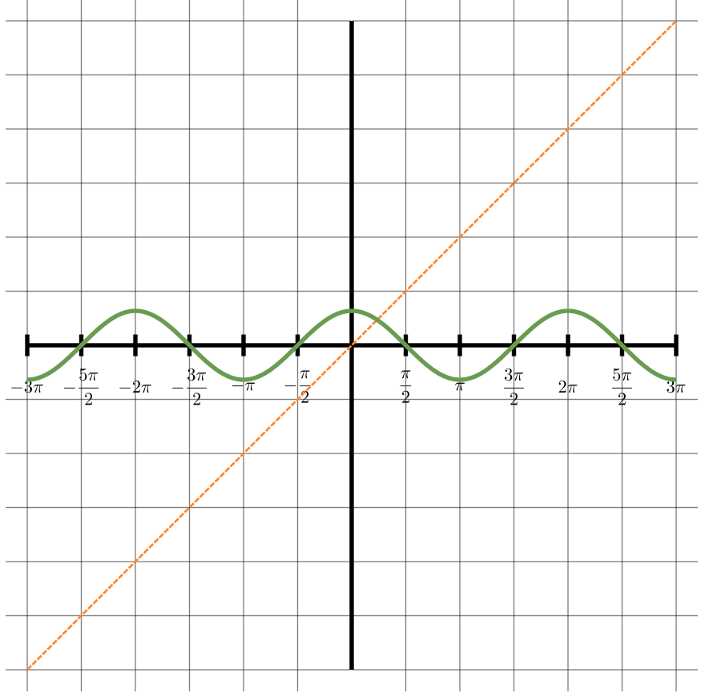
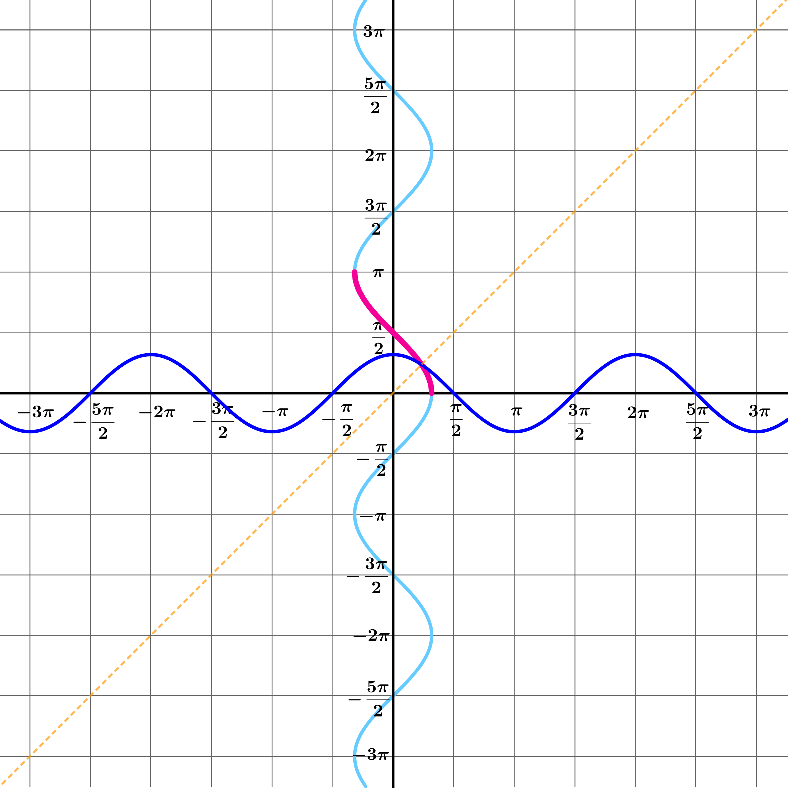
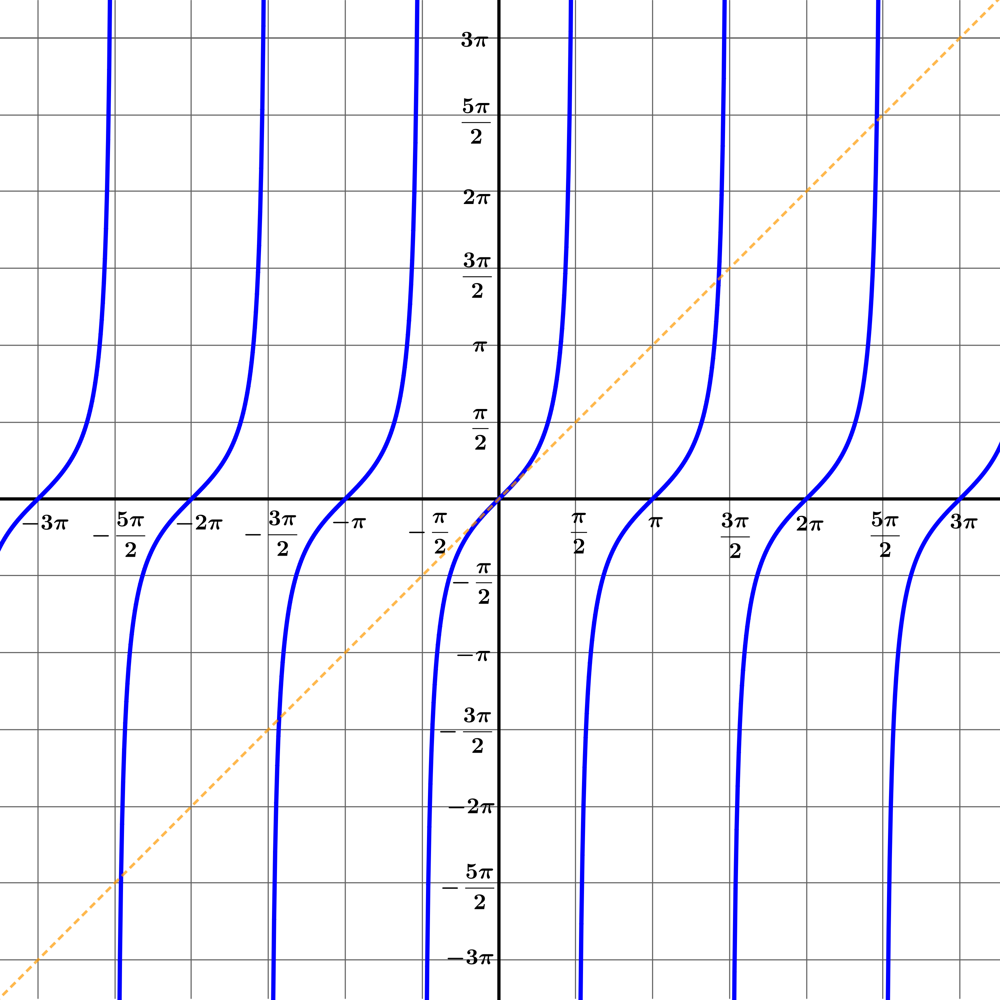
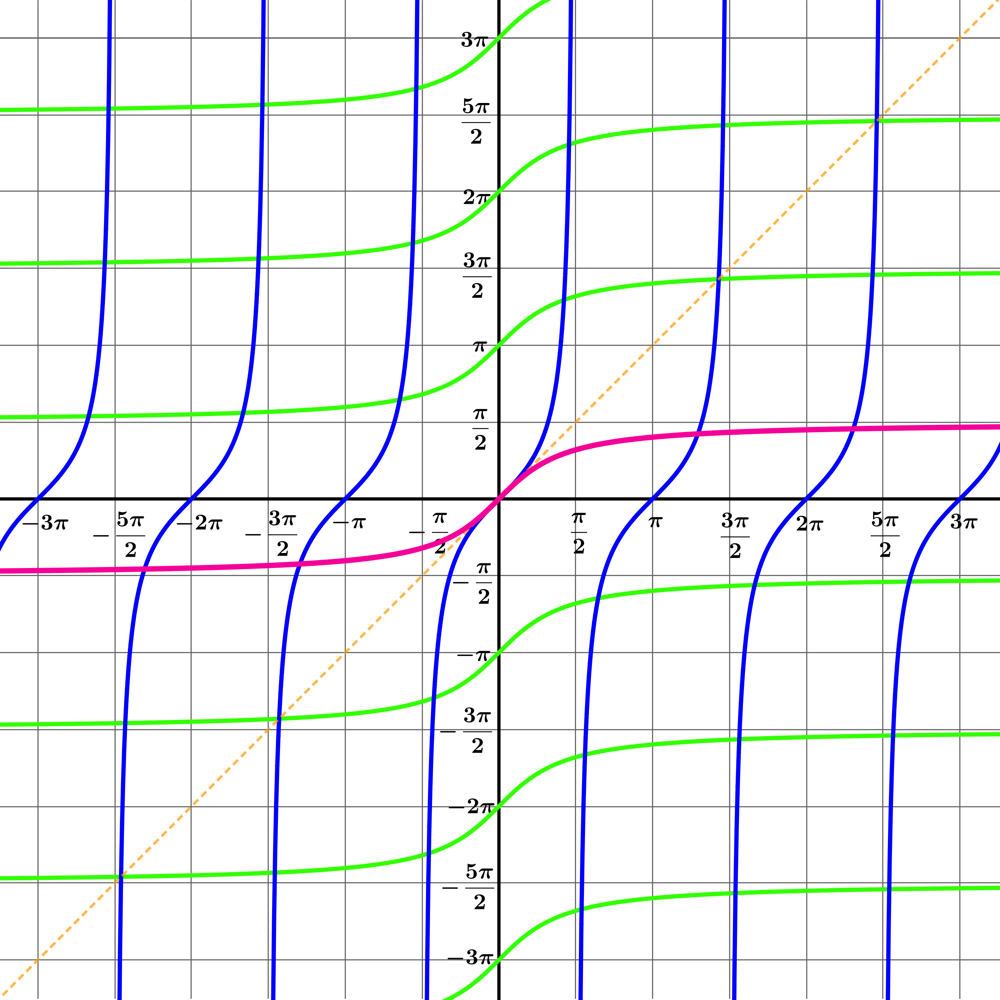

Welcome to Inverse Circular Functions: Part 1
This stage introduces the inverse circular functions — arcsin, arccos, and arctan. You'll discover how to define these functions carefully using graphs, and understand their domains and ranges.
Think carefully about domains and ranges — they are essential for defining inverse functions!
 Dr Brian Brooks
Dr Brian Brooks
Mathematics InSight
We are very used to the idea of inverse functions as somehow "undoing" a function. For example, the inverse of the function \(f(x)=e^x\) is \(f^{-1}x=\ln x\). Or for a more basic example, the inverse of the function \(g(x)=2x-3\) is the function \(g^{-1}(x)=\frac{x+3}{2}\).
Hopefully, we are also familiar with the idea that the graphs of a pair of inverse functions are reflections of eachother in the line \(y=x\). If this idea is unfamiliar to you, it would be worth spending a bit of research time figuring out why this should be before tackling the inverse circular functions.
A trickier example is the function \(f(x)=x^2\). If \(f^{-1}\) is its inverse, what is \(f^{-1}(4)\)?
If \(f^{-1}(4)=2\), what are \(f\circ f^{-1}(4)\) and \(f^{-1}\circ f(2)\)?
If \(f^{-1}(4)=-2\), what are \(f\circ f^{-1}(4)\) and \(f^{-1}\circ f(2)\)?
In either case, \(f\) and \(f^{-1}\) seem to undo each other, so that either value for \(f^{-1}(4)\) is perfectly reasonable.
But we need to know what \(f^{-1}(4)\) actually is; in fact, we need to know what \(f^{-1}(x)\) actually is for any \(x\geqslant 0\).
Let's take a look at this from a graphical point of view.
Draw the graph \(y=x^2\) and the line \(y=x\), and then reflect the curve in the line.
What is the equation of the reflected curve?
The equation of the reflected curve is \(x=y^2\).
On the same set of axes, draw the graph \(y=\sqrt x\) and reflect it in the line \(y=x\).
What is the equation of the reflected curve?
The equation of the reflected curve is \(y=x^2\) but only defined when \(x\geqslant 0\).
In terms of functions, we could say that it's the graph of the function \(f(x)=x^2\) where the domain of the function is \(\{x\in \mathbb{R}|x\geqslant 0\}\).
On the same set of axes, draw the graph \(y=-\sqrt x\) and reflect it in the line \(y=x\).
What is the equation of the reflected curve?
The equation of the reflected curve is \(y=x^2\) but only defined when \(x\leqslant 0\).
In terms of functions, we could say that it's the graph of the function \(f(x)=x^2\) where the domain of the function is \(\{x\in \mathbb{R}|x\leqslant 0\}\).
The inverse of the function
\[f(x)=x^2\text{ with domain }\{x\in \mathbb{R}|x\geqslant 0\}\text{ is}\] \[f^{-1}(x)=\sqrt x\]and the inverse of the function
\[f(x)=x^2\text{ with domain }\{x\in \mathbb{R}|x\leqslant 0\}\text{ is}\] \[f^{-1}(x)=-\sqrt x\]When it comes to finding the inverses of the circular functions, we face a similar difficulty with a similar solution — only it's all a bit more complicated.
If we are only thinking about right-angled triangles, there is no problem at all. For example,
\[\sin\frac{\pi}{6}=\frac{1}{2} \text{ and } \sin^{-1}\frac{1}{2}=\frac{\pi}{6}\]This is something you are already very used to. We could also write \(\arcsin\) instead of \(\sin^{-1}\). They mean the same thing, but you should get used to both notations.
When we move to general circular functions, we need to take rather more care!
We'll look at the whole thing from the point of view of graphs.
On the same set of axes, draw the graphs \(y=\sin x\) and \(x=\sin y\)
Solve the equation \(\sin y = \frac{1}{2}\) and explain how your answer relates to the graphs.

\(\sin y = \frac{1}{2}\) has solutions
\[y = \frac{\pi}{6},\frac{5\pi}{6},\frac{13\pi}{6},\ldots - \frac{7\pi}{6}, - \frac{11\pi}{6}, - \frac{19\pi}{6},\ldots\]
and these values are where the graphs \(x = \sin y\) and \(x = \frac{1}{2}\) intersect.
How many values do you want for \(\arcsin\frac{1}{2}\) ?
How many times do you want the line \(x = \frac{1}{2}\) to intersect with the graph \(y = \arcsin x\) ?
Like any function, the function \(y = \arcsin x\) must be well-defined (that is, uniquely defined) for all values of \(x\) in its domain.
That means that the line \(x = \frac{1}{2}\) must intersect with the graph \(y = \arcsin x\) exactly once.
How many values do you want for \(\arcsin a\) for any value of \(a\) between \(-1\) and \(1\)?
How many times do you want the line \(x = a \) for any value of \(a\) between \(-1\) and \(1\) to intersect with the graph \(y = \arcsin x\) ?
Like any function, the function \(y = \arcsin x\) must be well-defined (that is, uniquely defined) for all values of \(x\) in its domain.
That means that the line \(x = a\) must intersect with the graph \(y = \arcsin x\) exactly once.
How can you adapt the graph \(x = \sin y\) to ensure that any vertical line between \(x = - 1\) and \(x = 1\) intersects it exactly once?
We need to choose just a small part of the curve \(x = \sin y\), making sure that it is big enough to intersect every vertical line between \(x = - 1\) and \(x = 1\), but small enough to make sure that no such vertical line intersects this section of the curve more than once.
There are many such segments . . . an infinite number, in fact. Some of the possibilities are coloured pink and green in this diagram.
We could choose any coloured section of the graph \(x = \sin y\), but it would be strange (though not impossible) to choose any segment other than the one that would mean \(\arcsin0 = 0\).
Which of these pink or green segments on the curve would correspond to the most sensible definition of the function \(\arcsin x\) ?
Only the pink segment here is the graph \(y = \arcsin x\).
What are the domain and range of the function \(f(x)=\arcsin x\)?
The easiest way to see this is to look at the graph above:
\(\text{domain}=\big\{x\mid-1\leq x\leq 1\big\}\)
\(\text{range}=\Big\{y\;\Big|\;-\dfrac{\pi}{2}\leq y\leq \dfrac{\pi}{2}\Big\}\)
Draw the graph \(y = \cos x\).
On the same axes, draw the graph \(x=\cos y\).

Draw the graph \(y = \cos x\).
On the same axes, draw the graph \(x=\cos y\).
As before, any of the coloured segments will ensure that the vertical line cuts the graph exactly once at all times.
Which segment shall we choose for the graph \(y=\arccos x\) ?

domain:
\[\{ x: - 1 \leq x \leq 1\}\]
range:
\[\left\{ y:0 \leq y \leq \pi \right\}\]

Draw the graphs \(y=\tan x\) and \(x=\tan y\) on the same set of axes.

What are the domain and range of the function \(y=\arctan x\)?
What are the domain and range of the function \(y=\arctan x\)?
The red graph is the graph \(y=\arctan x\), giving
domain:
\[\mathbb{R}\]
range:
\[\left\{ y: - \frac{\pi}{2} < y < \frac{\pi}{2} \right\}\]
Well done on completing Part 1!
You have explored the inverse circular functions in depth — defining arcsin, arccos, and arctan, understanding their domains and ranges, drawing and interpreting their graphs.
Part 2 continues with identities, compositions, and sum formulas.
Dr Brian Brooks
Mathematics InSight